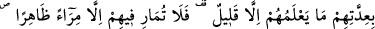

hamd ettiler. Ardından îmânlı gençler krala: “Allah’a ısmarladık. Sana cinlerden ve
insanlardan gelebilecek kötülükler için Allah’a sığınırız.” dediler. Sonra tekrar
yattıkları yere dönüp uyudular ve oracıkta öldüler. Kral, elbisesini onların üzerine örttü.
Onların her birine altınden birer tabut yapılmasını emretti. Ancak rüyasında onların
altından hoşlanmadıklarını gördü. Bunun üzerine tabutlarını sac ağacından yaptırdı.
Mağaranın kapısına da bir mescid inşâ ettirdi.”
Fakir (Bursevî) der ki: “İşte bu, fenâ ehlinin hâlidir. Bu sebepledir ki Şeyh
Sadreddin Konevî kabrinin üzerine türbe yapılmamasını vasiyet etmiştir. Ancak buna
rağmen insanlar onun kabrinin üzerine levhalardan bir türbe yapmışlardı. Onu da bir
fırtına alıp götürdü. Sanki o, üzerinin örtülmesini kabûl etmiyordu. Bunun sebebini de
ben şeyhimden (Osman Fazlî.) -Allah ruhûnu rahat ettirsin- şöyle işittim:
“Şeyh Sadreddin Konevî, Mesnevî sâhibi Mevlânâ gibi padişah evlâdındandır.
Mevlânâ, mutlak mânâda dünyayı terk ederdi. Sadreddin Konevi ise sûreten güzel yaşar,
dış görünüşüne önem verirdi. Hatta onun süslenip bezenmiş hizmetçileri bile vardı.
Onun bir de gümüş ibriği vardı. Bundan dolayı bir şahıs şeyhi yadırgamıştı. Konevî,
bunu anlayınca ibriğe işaret etti, o da yanına geldi. Orada bulunanlar bu hadiseyi
görünce şaşırıp kaldılar. O şahıs da tevbe etti.
Bir gün Sadreddin Konevî, Mevlânâ’ya şöyle dedi: “Melikler gibi yaşayalım,
dervişler gibi yatalım.” Mevlânâ da: “Dervişler gibi yaşayalım, melikler gibi yatalım.”
Bu sebepledir ki Mevlânâ’nın türbesi büyük bir ihtişam içindedir. Şeyh Sadreddin
Konevî’nin kabri ise böyle değildir.” Allah bize onların şefaatlerini nasib eylesin.
Molla Câmî der ki:
O’na vuslatı şahların atlas elbisesinde arama
Aşkın ten üzerine diktiği bu elbise yama altında gizlidir
22. (İnsanların kimi:) “Onlar üç kişidir; dördüncüleri de köpekleridir”
diyecekler; yine: “Beş kişidir; altıncıları köpekleridir” diyecekler. (Bunlar)
bilinmeyen hakkında tahmin yürütmektir. (Kimileri de:) “Onlar yedi kişidir;
sekizincisi köpekleridir” derler. De ki: Onların sayılarını Rabbim daha iyi bilir.
Onlar hakkında bilgisi olan çok azdır. Öyle ise Ashâb-ı Kehf hakkında, delillerin
açık olması haricinde bir münakaşaya girişme ve onlar hakkında (ileri geri